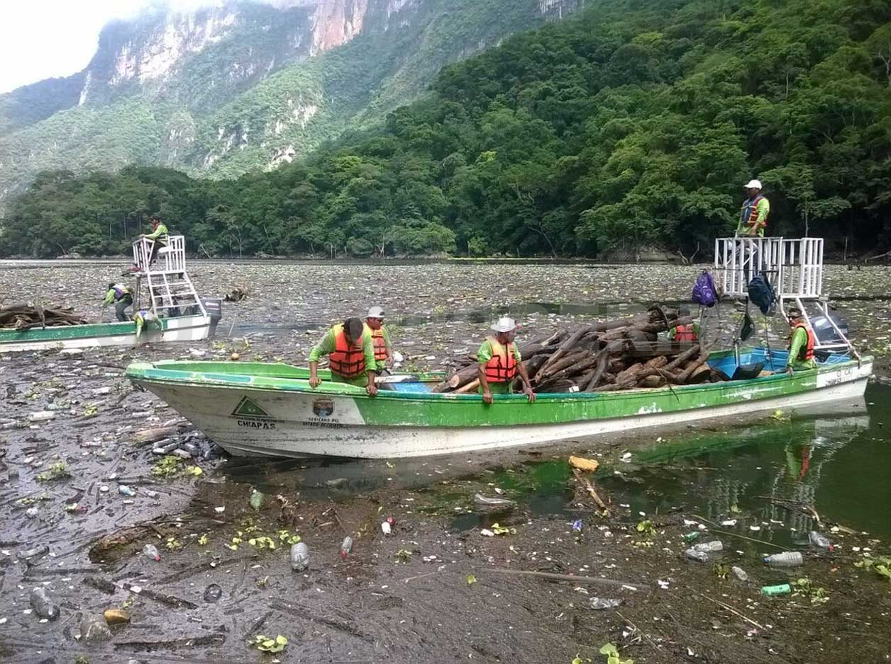
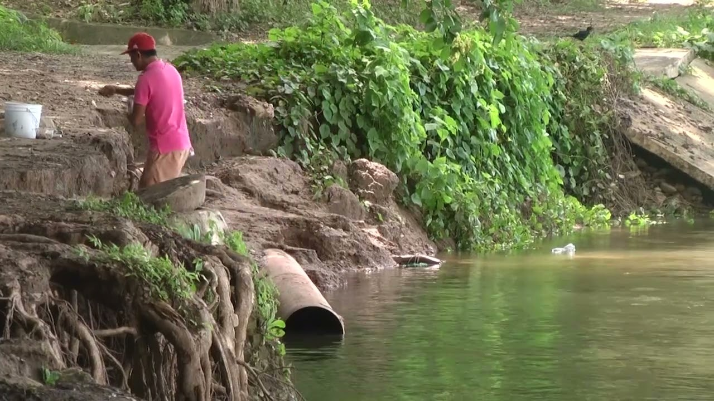
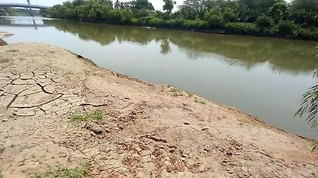
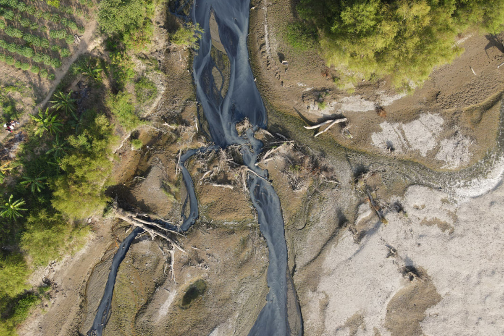
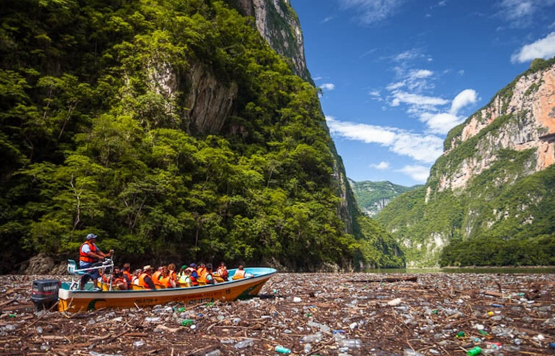

<!DOCTYPE html>
<html lang="es">
<head>
  <meta charset="UTF-8" />
  <meta name="viewport" content="width=device-width, initial-scale=1.0" />
  <title>Río Grijalva 🌊 | Conciencia Ambiental</title>

  <!--Fuentes y estilos -->
  <link href="https://fonts.googleapis.com/css2?family=Poppins:wght@300;400;600;700&display=swap" rel="stylesheet" />
  <link rel="stylesheet" href="styles.css" />
  <link href="https://unpkg.com/aos@2.3.1/dist/aos.css" rel="stylesheet" />

  <!--Favicon -->
  <link rel="icon" href="img/logo.jpg" type="image/jpg" />
</head>

<body>
  <!--Todo el contenido-->
  
  <!-- Scripts al final para mejor rendimiento -->
  <script src="https://unpkg.com/aos@2.3.1/dist/aos.js"></script>
  <script src="script.js"></script>
</body>
</html>


<body>
  <!-- ===== ANIMACIÓN DE CARGA ===== -->
  <div id="loader">
    <div class="loader-content">
      
      <div class="loader-characters">
        
        
        
      </div>
      <h2>🌊 Cuidemos el Río Grijalva 🌿</h2>
      <p class="impact-text">“El agua que hoy contaminas, mañana la necesitarás.”</p>
      <div class="loader-bar"></div>
    </div>
  </div>

  <!-- ===== CONTENIDO PRINCIPAL ===== -->
  <main style="display:none;">
    <div class="page-content">

      <!-- ===== HEADER ===== -->
      <header class="header">
        <nav class="navbar">
          <div class="logo">
            
            <span>Río Grijalva</span>
          </div>
          <ul class="nav-links">
            <li><a href="index.html" class="active">Inicio</a></li>
            <li><a href="acerca.html">Acerca</a></li>
            <li><a href="metales.html">Metales</a></li>
            <li><a href="consecuencias.html">Consecuencias</a></li>
            <li><a href="soluciones.html">Soluciones</a></li>
            <li><a href="juego.html">Jugar</a></li>
          </ul>
        </nav>
      </header>

      <!-- ===== HERO ===== -->
      <section class="hero">
        <div class="overlay"></div>
        <div class="hero-content" data-aos="fade-up">
          <h1>💧 El corazón de Chiapas está en peligro</h1>
          <p>Descubre la verdad sobre la contaminación del río Grijalva y cómo puedes ayudar a cambiar su futuro.</p>
          <a href="https://www.meganoticias.mx/tuxtla-gutierrez/noticia/estudio-revela-contaminacion-con-metales-pesados-en-el-grijalva/567396"
             target="_blank" class="hero-link">Ver estudio reciente</a>
        </div>
      </section>

      <!-- ===== CARRUSEL DE IMÁGENES ===== -->
      <section class="carrusel-section" data-aos="fade-up">
        <h2>📸 Río Grijalva en Imágenes</h2>
        <div class="carousel-container">
          <button class="prev">&#10094;</button>
          <div class="carousel-slide">
            
            
            
            
            
            
            
            
          </div>
          <button class="next">&#10095;</button>
        </div>
      </section>

      <!-- ===== VIDEO ===== -->
      <section class="video-section" data-aos="fade-up" data-aos-delay="200">
        <h2>🎥 Río de Chiapas Contaminado por Metales Tóxicos: Informativo MXN</h2>
        <div class="video-container" data-aos="zoom-in" data-aos-delay="400">
          <video controls poster="img/grijalva1.jpg">
            <source src="img/Video rio grijalva.mp4" type="video/mp4">
            Tu navegador no soporta la reproducción de video.
          </video>
        </div>
      </section>

      <!-- ===== MISIÓN ===== -->
      <section class="mision" data-aos="fade-up">
        <h2>Nuestra Misión 🌱</h2>
        <p>Proteger el ecosistema del río Grijalva y concientizar a la población sobre los efectos de los metales pesados
        en el agua, la fauna y la salud humana.</p>
      </section>

      <!-- ===== DATOS ===== -->
      <section class="datos">
        <h2 data-aos="fade-right">Datos preocupantes ⚠️</h2>
        <div class="datos-grid">
          <a href="https://www.meganoticias.mx/tuxtla-gutierrez/noticia/estudio-revela-contaminacion-con-metales-pesados-en-el-grijalva/567396" target="_blank" class="dato-card" data-aos="zoom-in">
            <h3>🧪 87%</h3>
            <p>De las muestras del río presentan presencia de metales pesados como plomo y arsénico.</p>
          </a>
          <a href="https://www.meganoticias.mx/tuxtla-gutierrez/noticia/estudio-revela-contaminacion-con-metales-pesados-en-el-grijalva/567396" target="_blank" class="dato-card" data-aos="zoom-in" data-aos-delay="100">
            <h3>🌊 +600 km</h3>
            <p>De recorrido con descargas industriales y agrícolas que afectan su pureza.</p>
          </a>
          <a href="https://www.meganoticias.mx/tuxtla-gutierrez/noticia/estudio-revela-contaminacion-con-metales-pesados-en-el-grijalva/567396" target="_blank" class="dato-card" data-aos="zoom-in" data-aos-delay="200">
            <h3>👩‍⚕️ Riesgo</h3>
            <p>El consumo prolongado del agua del río puede causar daños neurológicos y renales.</p>
          </a>
        </div>
      </section>

      <!-- ===== LLAMADO A LA ACCIÓN ===== -->
      <section class="accion" data-aos="fade-up">
        <h2>¡Actúa Hoy! 💚</h2>
        <p>Cada acción cuenta. Desde casa, puedes marcar la diferencia para el futuro del río Grijalva.</p>
        <a href="soluciones.html" class="btn-accion">Ver cómo ayudar</a>
      </section>

      <!-- ===== FOOTER ===== -->
      <footer>
        <div class="footer-bottom">
          <p>&copy; 2025 Proyecto Ambiental — <strong>Río Grijalva</strong> | Desarrollado por <strong>Equipo 2 UNACH</strong></p>
        </div>
      </footer>

    </div>
  </main>

  <!-- ===== SCRIPTS ===== -->
  <script>
  document.addEventListener("DOMContentLoaded", () => {
    const loader = document.getElementById("loader");
    const mainContent = document.querySelector("main");

    function showPage() {
      loader.classList.add("fade-out");
      setTimeout(() => {
        loader.style.display = "none";
        mainContent.style.display = "block";
        mainContent.classList.add("fade-in");
      }, 1000);
    }

    setTimeout(showPage, 6000);
    setTimeout(() => {
      if (loader.style.display !== "none") showPage();
    }, 6500);

    // Carrusel
    const carouselSlide = document.querySelector(".carousel-slide");
    const images = document.querySelectorAll(".carousel-slide img");
    const prev = document.querySelector(".prev");
    const next = document.querySelector(".next");
    let counter = 0;
    const total = images.length;

    function move(dir) {
      if (dir === "next") counter = (counter + 1) % total;
      else counter = (counter - 1 + total) % total;
      carouselSlide.style.transform = `translateX(-${counter * 100}%)`;
    }

    let auto = setInterval(() => move("next"), 5000);
    next.addEventListener("click", () => { move("next"); clearInterval(auto); auto = setInterval(() => move("next"), 5000); });
    prev.addEventListener("click", () => { move("prev"); clearInterval(auto); auto = setInterval(() => move("next"), 5000); });

    document.querySelector(".carousel-container").addEventListener("mouseenter", () => clearInterval(auto));
    document.querySelector(".carousel-container").addEventListener("mouseleave", () => auto = setInterval(() => move("next"), 5000));

    document.querySelectorAll(".loader-characters img").forEach((char, i) => {
      char.style.animationDelay = `${i * 0.5}s`;
    });
  });

  AOS.init({ duration: 1200, once: true });
  </script>

</body>
</html>
